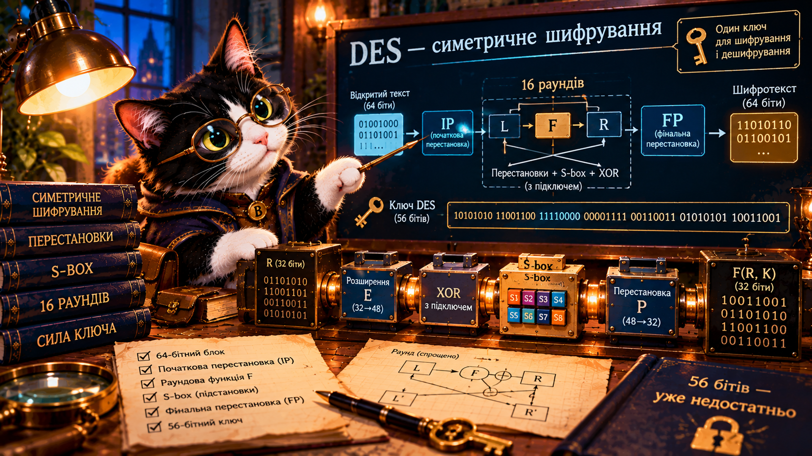

Практика 1 · Перестановки
Переставте 8 бітів за таблицею та перевірте результат.
ВідкритиЧи може правильно побудований шифр втратити надійність через довжину ключа?
🐈⬛ Буч змінив роль: тепер він професор криптографії. Разом із ним простежимо шлях блока, зберемо перестановку, перевіримо підстановку та оцінимо перебір ключів.

DES (Data Encryption Standard) — історичний симетричний блочний шифр: для шифрування і дешифрування використовують той самий секретний ключ. DES обробляє блоки по 64 біти, має 16 раундів і ефективну довжину ключа 56 бітів (8 додаткових бітів 64-бітного представлення ключа використовують для контролю парності).
Важливо: сама перестановка IP не забезпечує секретності. Захист забезпечує сукупність раундових перетворень та секретний ключ. DES нині не рекомендують для захисту нових систем через короткий ключ.
У мережі Фейстеля дешифрування використовує раундові підключі у зворотному порядку. Ключ не передають разом із повідомленням відкритим каналом.
Для навчання беремо 8 бітів, а не реальні 64. Правило: кожна цифра таблиці вказує, з якої позиції взяти біт.
Кожен раунд DES спирається на мережу Фейстеля: L′ = R, R′ = L ⊕ F(R,K). У справжній функції F: розширення E (32→48), XOR із 48-бітним підключем, вісім S-box (48→32), перестановка P.
Перевіримо маленький XOR — не DES, а модель однієї операції:
У справжньому DES кожен S-box приймає 6 бітів і повертає 4 біти. Для вибору елемента таблиці зовнішні біти задають рядок, середні чотири — стовпець.
Тут використано реальну таблицю S1 DES. Решта повного алгоритму на сторінці не моделюється.
Для n-бітного ключа існує 2ⁿ можливих значень. Оцінимо час повного перебору при заданій швидкості. Це теоретична оцінка, а не вимір реальної атаки.
У 1998 році машина EFF Deep Crack продемонструвала практичну атаку перебором на DES. Історія DES показує, що оцінка стійкості змінюється з розвитком обчислювальної техніки. Для сучасних застосувань використовують, зокрема, AES.
Переставте 8 бітів за таблицею та перевірте результат.
ВідкритиВідновіть порядок бітів і знайдіть обернену перестановку.
ВідкритиЗнайдіть рядок, стовпець і вихід підстановки S1.
ВідкритиЗмоделюйте перебір та поясніть, чому 56 бітів — слабке місце.
ВідкритиDES був важливим етапом розвитку криптографії, але довжина його ключа з часом перестала відповідати вимогам безпеки. Зіставте три чинники: конструкцію алгоритму, простір ключів і швидкість обчислень. Сформулюйте висновок: чи означає застарілий ключ, що всі ідеї DES були помилковими?
Завершіть дослідження у вебботі, а власні висновки надішліть через форму відповідей.